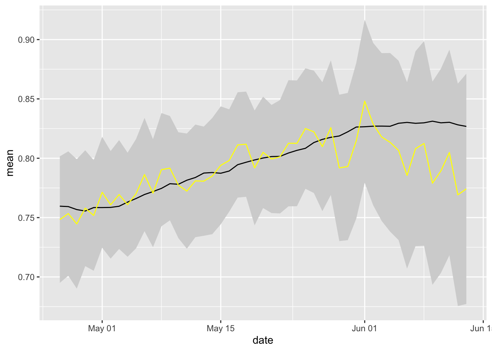

library(tidyverse)
library(sparkline)
library(kableExtra)
library(sf, quietly = TRUE)
options(tigris_use_cache = TRUE)
library(tigris, quietly = TRUE)
library(tidycensus, quietly = TRUE)
library(viridis, quietly = TRUE)
library(ggrepel)
options(tigris_class = "sf")
library(lubridate, quietly = TRUE)
library(janitor)
library(fuzzyjoin) # for interval_left_join
library(broom)
library(RSocrata)
library(RcppRoll)The hope is that this will grow into a replacement blog post for Connecticut Covid-19 stats, but baased on RMarkdown rather than simple markdown.
Assumes all the info in daily_ct_stats.R is available. Using week_setup to get as-of dates, age_town_acs to get populaton and town geometries and dph_towns to get Covid-19 cases and deaths
You can also embed plots, for example:
